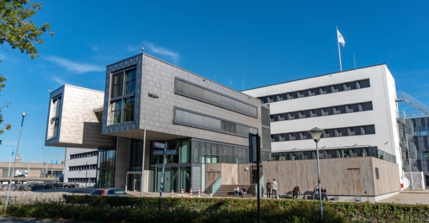

Home
Profile
Dashboard
Blog
FAQ
×
HBO-ICT
IB
LEARN ENVIRONMENT
TEAMS
HZ
GITHUB
☰Menu

WHY DID YOU CHOOSE THIS STUDY PROGRAM?
I think that this subject will change the world as we know it,destroying some wall that persist and help
billion of people from everyday problems to way bigger ones. IT is the present and the future of our humanity.
WHAT DO YOU WANT TO DO AFTER GRADUATION?
I Honestly don't know exactly what I want to do afetr graduation, but I know that studying at HZ will
give me the opportunity to answer to this question, thank to variarity of subjects we will study, projects andintership.
I know that after graduation I would like to work in something that can help people or something that can make
their life easier and more technological. HZ gives us the possibiliy to choose 3 different specializations as:
Data science, Business IT consultant and Softwer engineer.Probably I will choose the last one because it fit better
with my interests and my ideal future job.